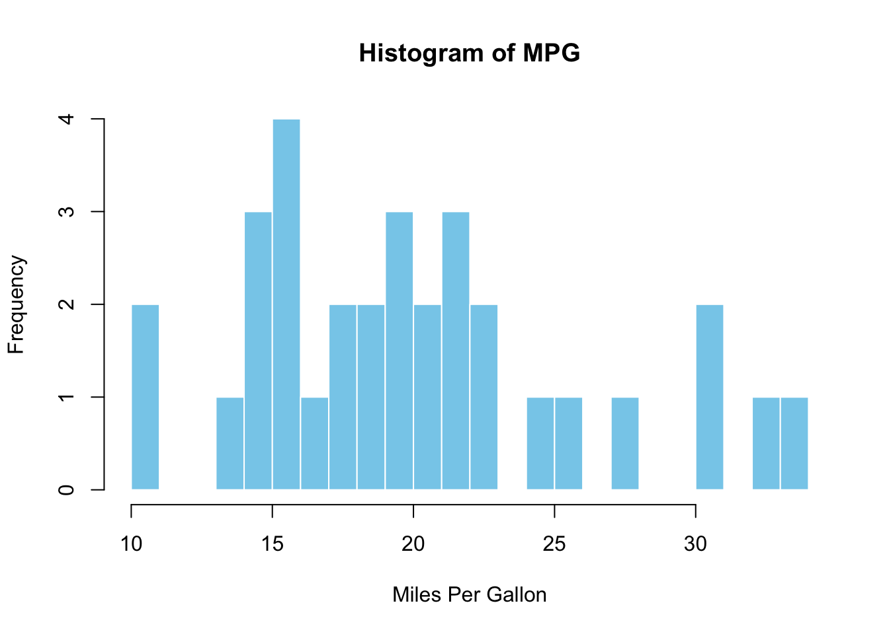
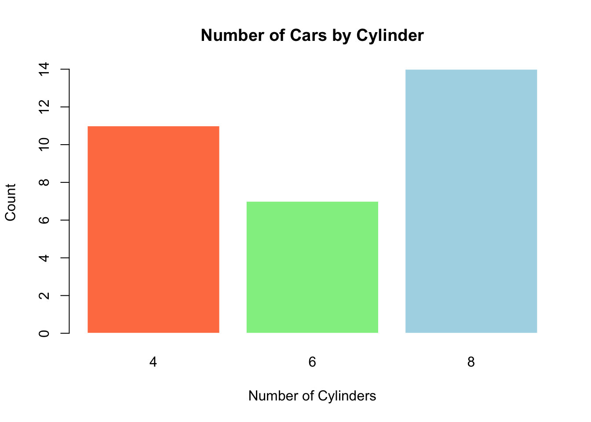
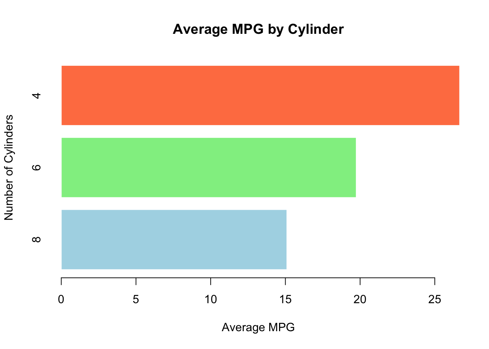
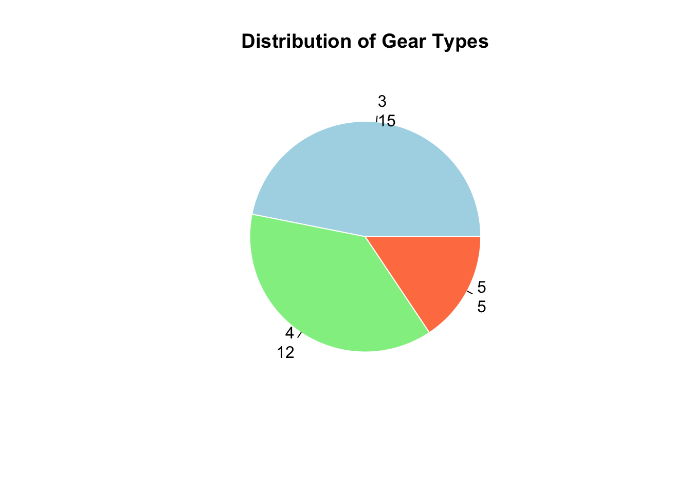
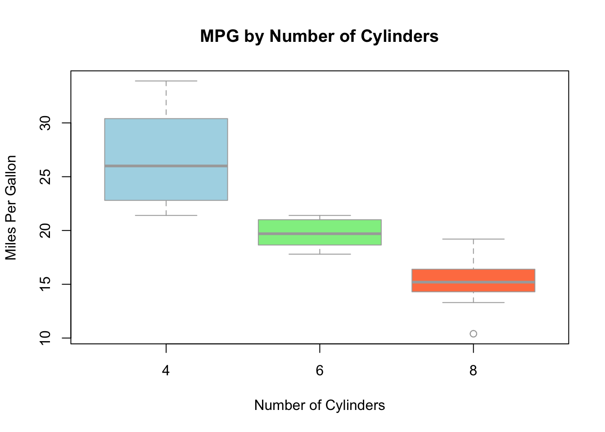
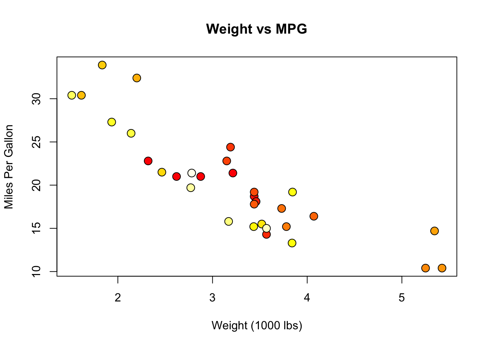
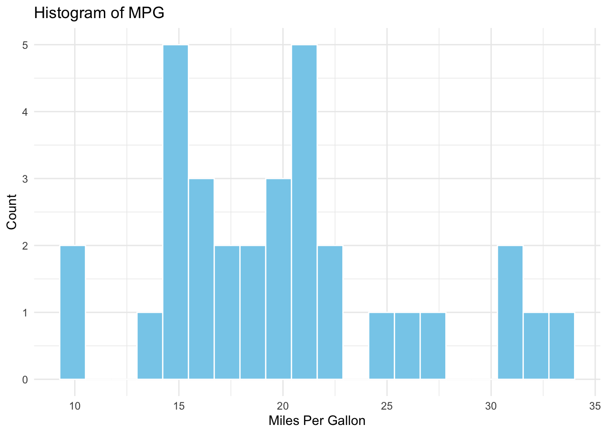
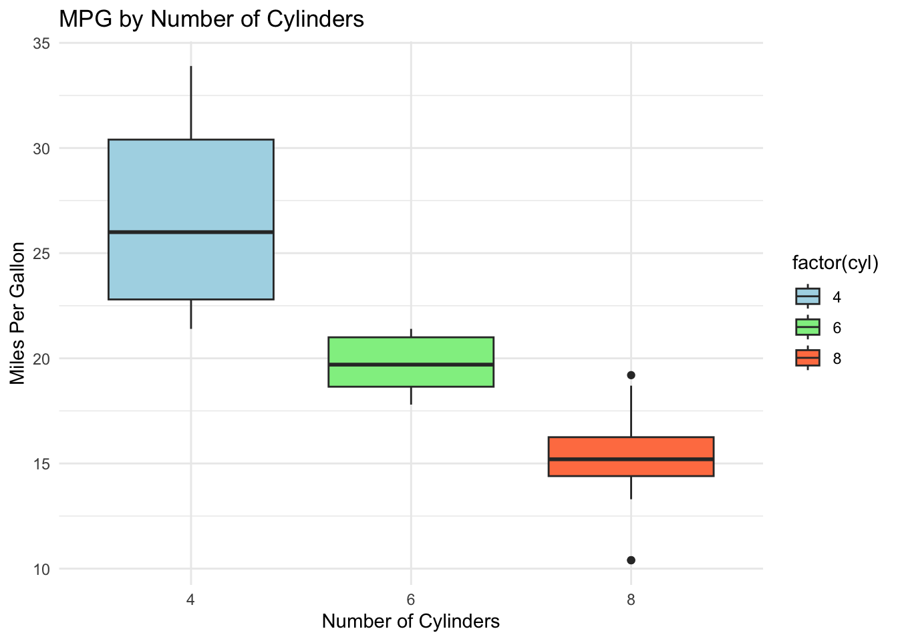

library(datasets)# a. Histogramhist(mtcars$mpg, main="Histogram of MPG",xlab="Miles Per Gallon",col="skyblue",border="white",breaks=20)

# b. Barchart (Vertical)barplot(table(mtcars$cyl), main="Number of Cars by Cylinder",xlab="Number of Cylinders",ylab="Count",col=c("coral", "lightgreen", "lightblue"),border="white")

# Horizontal Barchartbarplot(sort(tapply(mtcars$mpg, mtcars$cyl, mean)),main="Average MPG by Cylinder",xlab="Average MPG",ylab="Number of Cylinders",col=c("lightblue", "lightgreen", "coral"),border="white",horiz=TRUE)

# c. Piechartpie(table(mtcars$gear), main="Distribution of Gear Types",col=c("lightblue", "lightgreen", "coral"),border="white",labels=paste0(names(table(mtcars$gear)), "\n", table(mtcars$gear)))

# d. Boxplotboxplot(mpg ~ cyl, data=mtcars,main="MPG by Number of Cylinders",xlab="Number of Cylinders",ylab="Miles Per Gallon",col=c("lightblue", "lightgreen", "coral"),border="darkgray")

# e. Scatterplotplot(mtcars$wt, mtcars$mpg, main="Weight vs MPG",xlab="Weight (1000 lbs)",ylab="Miles Per Gallon",pch=21,bg=heat.colors(32),cex=1.5)

2. Repeat using ggplot2
library(ggplot2)# Histogramggplot(mtcars, aes(x=mpg)) +geom_histogram(fill="skyblue", color="white", bins=20) +labs(title="Histogram of MPG", x="Miles Per Gallon", y="Count") +theme_minimal()

# Vertical Barchartggplot(mtcars, aes(x=factor(cyl))) +geom_bar(fill=c("coral", "lightgreen", "lightblue")) +labs(title="Number of Cars by Cylinder", x="Number of Cylinders", y="Count") +theme_minimal()
# Boxplotggplot(mtcars, aes(x=factor(cyl), y=mpg, fill=factor(cyl))) +geom_boxplot() +labs(title="MPG by Number of Cylinders", x="Number of Cylinders", y="Miles Per Gallon") +theme_minimal() +scale_fill_manual(values=c("lightblue", "lightgreen", "coral"))

# Scatterplotggplot(mtcars, aes(x=wt, y=mpg)) +geom_point(aes(color=mpg), size=3) +scale_color_gradientn(colors=heat.colors(10)) +labs(title="Weight vs MPG", x="Weight (1000 lbs)", y="Miles Per Gallon") +theme_minimal()
Warning in grSoftVersion(): unable to load shared object '/Library/Frameworks/R.framework/Resources/modules//R_X11.so':
dlopen(/Library/Frameworks/R.framework/Resources/modules//R_X11.so, 0x0006): Library not loaded: '/opt/X11/lib/libSM.6.dylib'
Referenced from: '/Library/Frameworks/R.framework/Versions/4.2/Resources/modules/R_X11.so'
Reason: tried: '/opt/X11/lib/libSM.6.dylib' (no such file), '/Library/Frameworks/R.framework/Resources/lib/libSM.6.dylib' (no such file), '/Library/Java/JavaVirtualMachines/jdk1.8.0_241.jdk/Contents/Home/jre/lib/server/libSM.6.dylib' (no such file)
Warning in cairoVersion(): unable to load shared object '/Library/Frameworks/R.framework/Resources/library/grDevices/libs//cairo.so':
dlopen(/Library/Frameworks/R.framework/Resources/library/grDevices/libs//cairo.so, 0x0006): Library not loaded: '/opt/X11/lib/libXrender.1.dylib'
Referenced from: '/Library/Frameworks/R.framework/Versions/4.2/Resources/library/grDevices/libs/cairo.so'
Reason: tried: '/opt/X11/lib/libXrender.1.dylib' (no such file), '/Library/Frameworks/R.framework/Resources/lib/libXrender.1.dylib' (no such file), '/Library/Java/JavaVirtualMachines/jdk1.8.0_241.jdk/Contents/Home/jre/lib/server/libXrender.1.dylib' (no such file)
Warning in svg(paste0(name, ".svg"), width = width/72, height = height/72):
failed to load cairo DLL
null device
1
# 2. Vertical Barchartbar_plot <-ggplot(mtcars, aes(x=factor(cyl))) +geom_bar(fill=c("coral", "lightgreen", "lightblue")) +labs(title="Number of Cars by Cylinder", x="Number of Cylinders", y="Count") +theme_minimal()save_plot(bar_plot, "barchart")
Warning in svg(paste0(name, ".svg"), width = width/72, height = height/72):
failed to load cairo DLL
Warning in svg(paste0(name, ".svg"), width = width/72, height = height/72):
failed to load cairo DLL
null device
1
# 5. Boxplotbox_plot <-ggplot(mtcars, aes(x=factor(cyl), y=mpg, fill=factor(cyl))) +geom_boxplot() +labs(title="MPG by Number of Cylinders", x="Number of Cylinders", y="Miles Per Gallon") +theme_minimal() +scale_fill_manual(values=c("lightblue", "lightgreen", "coral"))save_plot(box_plot, "boxplot")
Warning in svg(paste0(name, ".svg"), width = width/72, height = height/72):
failed to load cairo DLL
null device
1
# 6. Scatterplotscatter_plot <-ggplot(mtcars, aes(x=wt, y=mpg)) +geom_point(aes(color=mpg), size=3) +scale_color_gradientn(colors=heat.colors(10)) +labs(title="Weight vs MPG", x="Weight (1000 lbs)", y="Miles Per Gallon") +theme_minimal()save_plot(scatter_plot, "scatterplot")
Warning in svg(paste0(name, ".svg"), width = width/72, height = height/72):
failed to load cairo DLL
null device
1
print("All plots have been saved in PDF, JPG, SVG, TIFF, and BMP formats.")
[1] "All plots have been saved in PDF, JPG, SVG, TIFF, and BMP formats."